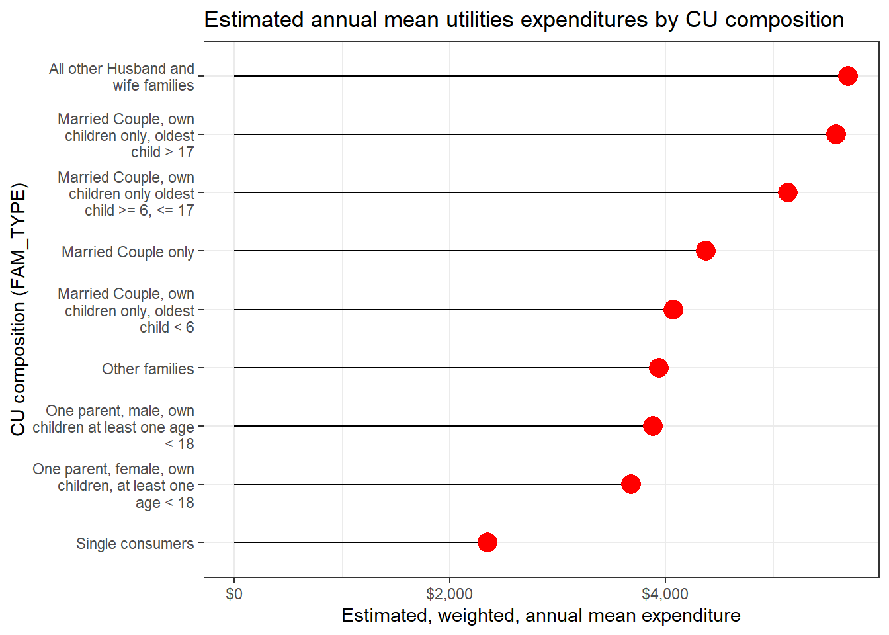

Introduction to cepumd
Motivation
The purpose of cepumd is to make working with Consumer Expenditure Surveys (CE) Public-Use Microdata (PUMD) easier toward calculating mean, weighted, annual expenditures (henceforth “mean expenditures”). The challenges cepumd seeks to address deal primarily with pulling together the necessary data toward this end. Some of the overarching ideas underlying the package are as follows:
Use a Tidyverse framework for most operations and be (hopefully) generally Tidyverse friendly
Balance the effort to make the end user’s experience with CE PUMD easier while being flexible enough to allow that user to perform any analysis with the data they wish
Only designed to help users calculate mean expenditures on and of the consumer unit (CU), i.e., not income, not assets, not liabilities, not gifts.
Overview of the CE and CE PUMD
First a little history…
The first Consumer Expenditure Survey happened in 1888 (https://www.bls.gov/opub/hom/cex/history.htm), it was first used to revise CPI weights in 1972-1973, and it has been collected on a monthly basis since 1979. For a little bit more detail on the history of the CE, check out the slide deck of a presentation delivered by Steve Henderson (former Chief of the Branch of Information and Analysis) and Adam Safir (current Division Chief of CE) called 130 Years of the Consumer Expenditure Surveys (CE): 1888 - 2018
From the CE home page:
“The Consumer Expenditure Surveys (CE) program provides data on expenditures, income, and demographic characteristics of consumers in the United States. The CE program provides these data in tables, LABSTAT database, news releases, reports, and public use microdata files.
CE data are collected by the Census Bureau for BLS in two surveys, the Interview Survey for major and/or recurring items and the Diary Survey for more minor or frequently purchased items. CE data are primarily used to revise the relative importance of goods and services in the market basket of the Consumer Price Index. The CE is the only Federal household survey to provide information on the complete range of consumers’ expenditures and incomes. Here is an overview of the CE program and its methods.”
Some important things to note are that expenditure data are collected through two different survey instruments (Diary and Interview), expenditure categories are organized hierarchically, and data are stored across thousands of files to which the CE provides access through their website. Also, given the length of the program, it would be difficult to harmonize data across all those years and files, so there are some inconsistencies in the way data are stored, which cepumd seeks to address (more on this further down).
Please visit the following pages to learn more about the CE program overall and CE PUMD more specifically.
- CE homepage: (https://www.bls.gov/cex/)
- CE PUMD page: (https://www.bls.gov/cex/pumd.htm)
- CE PUMD Getting Started Guide: https://www.bls.gov/cex/pumd-getting-started-guide.htm
- CE Dictionary for Interview and Diary Surveys (XLSX download) (https://www.bls.gov/cex/pumd/ce_pumd_interview_diary_dictionary.xlsx)
- CE PUMD published tables: (https://www.bls.gov/cex/tables.htm)
- CE PUMD Handbook of Methods: https://www.bls.gov/opub/hom/cex/
- CE Frequently Asked Questions: https://www.bls.gov/cex/csxfaqs.htm
Challenges addressed by cepumd
cepumd seeks to address challenges in three categories: data gathering/organization; managing data inconsistencies; and calculating weighted, annual metrics.
- Data wrangling
- Convert hierarchical grouping (HG) files to data tables using
ce_hg() - Help the user identify the Universal Classification Codes (UCCs) related to their analysis using a combination of
ce_hg()andce_uccs() - Combine all required files and variables using
ce_prepdata()
- Convert hierarchical grouping (HG) files to data tables using
- Managing data inconsistencies
- Provide the ability to re-code variable categories using the CE Dictionary for Interview and Diary Surveys
- Resolve some inconsistencies such as differences code definitions between the Interview and Diary (check the definitions of the “FAM_TYPE” variable categories in 2015 for an example)
- Provide useful errors or warnings when there are multiple categories of something the user is trying to access, e.g., some titles in the hierarchical grouping files (“stub” or “HG” files) repeat and requires more careful selection of UCCs
- Calculating weighted, annual metrics
- Calculate a mean expenditure with
ce_mean()or expenditure quantile withce_quantile() - Account for the factor (annual vs. quarterly expenditure)
- Account for the “months in scope” of a given consumer unit (CU)
- Annualize expenditures for either Diary or Interview expenditures
- Integrate Interview and Diary data as necessary
- Calculate a mean expenditure with
Source code and other package information is available at https://github.com/arcenis-r/cepumd
Cautions and recommendations
Estimates produced using PUMD, which is top-coded by the CE and has some records suppressed to protect respondent confidentiality, will not match the published estimates released by the CE in most cases. The CE’s published estimates are based on confidential data that are not top-coded nor have records suppressed. You can learn more at CE Protection of Respondent Confidentiality.
When calculating estimates for sub-samples or cross-sections of data it is best to stick to the combinations of variables that the CE uses in it’s publication tables, e.g., income, geography, composition of CU, size of CU. This is because CE data are collected using a stratified, random sample (a.k.a., “representative sample”) and only analyses conducted using the stratification variables are statistically valid. Using other variables can be helpful to understand spending across different groups, but unweighted estimates are likely more useful for this.
cepumdcurrently does not support unweighted estimates, but data for such an analysis can be prepared usingce_prepdata().Quantiles should only be generated using data from 1 survey instrument as the samples for the Interview and Diary are different.
Check the expenditure category in the appropriate HG file to ensure that it is the category for which you intend to generate an estimate.
Store an HG object in the environment and call that directly in
ce_prepdata().
Installation
You can install the development version of cepumd from its GitHub repo.
Key cepumd functions
The workhorse of
cepumdisce_prepdata(). It merges the household characteristics file (FMLI/-D) with the corresponding expenditure tabulation file (MTBI/EXPD) for a specified year, adjusts weights for months-in-scope and the number of collection quarters, adjusts some cost values by their periodicity factor (some cost categories are represented as annual figures and others as quarterly). With the recent update it only requires the first 3 arguments to function: the year, the survey type, and one or more valid UCCs.ce_prepdata()now creates all of the other necessary objects within the function if not provided.There are two functions for wrangling hierarchical grouping data into more usable formats:
ce_hg()pulls the requested type of HG file (Interview, Diary, or Integrated) for a specified year.ce_uccs()filters the HG file for the specified expenditure category and returns either a data frame with only that section of the HG file or the Universal Classification Codes (UCCs) that make up that expenditure category.
There are two functions that the user can use to calculate CE summary statistics:
ce_mean()calculates a mean expenditure, standard error of the mean, coefficient of variation, and an aggregate expenditure.ce_quantiles()calculates weighted expenditure quantiles. It is important to note that calculating medians for integrated expenditures is not recommended because the calculation involves using weights from both the Diary and Survey instruments.
Example workflows
The following are a few sample workflows that show how cepumd can be used. Before jumping into those I’ll first install and load the necessary packages and store some CEPUMD files. I’ll keep the path to those files in a variable called ce_data_dir.
Simple workflow: Integrated pet expenditures
The following is an example of how someone might go about using cepumd to calculate a 2021 annual, weighted estimate of mean expenditures on pets for all of the U.S. using CE integrated data. This is just a quick and easy calculation.
Code
integ21_hg <- ce_hg(
2021,
integrated,
hg_zip_path = file.path(ce_data_dir, "stubs.zip")
)
ce_prepdata(
2021,
integrated,
integ21_hg,
uccs = ce_uccs(integ21_hg, expenditure = "Pets", ucc_group = "PETS"),
dia_zp = file.path(ce_data_dir, "diary21.zip"),
int_zp = c(
file.path(ce_data_dir, "intrvw20.zip"),
file.path(ce_data_dir, "intrvw21.zip")
)
) |>
ce_mean() |>
kable(booktabs = TRUE)| agg_exp | mean_exp | se | cv |
|---|---|---|---|
| 130886736176 | 981.3035 | 53.5767 | 5.459748 |
Yup… that’s all it takes. I simply ran ce_hg to get the hierarchical grouping (stub) file for integrated expenditures for 2021; then ran ce_prepdata() with the year, the survey type, the stub file, uccs I needed, and the file paths to where I downloaded the data files; then I piped that directly into ce_mean(). An important thing to notice is that I provided two file paths to the int_zp argument. I did this because calculating integrated CE annual estimates actually requires 5 quarters of data from the Interview survey. Some of the data for calculating 2021 estimates is provided in the 2020 Interview data.This is one of the reasons it’s important to be familiar with CE methodology and how it changes over time when working with CE PUMD. Prior to 2020, file storing practices were different as stated in the Getting Started Guide Interview Survey section.
Slightly more advanced workflow: Used Car & Truck Expenditures by Urbanicity
In this example I’ll calculate estimated annual expenditures on new and used cars by urbanicity also for 2021. Once the data are prepped with ce_data() I’ll just nest the data by urbanicity and run ce_means() and ce_quantiles() on the nested data sets. Since the overwhelming number of reports of vehicle purchases occur in the Interview survey, I’ll only use Interview data.
First I’ll get the stub file and filter it for categories involving new or used cars.
Code
| level | title | ucc | survey | factor |
|---|---|---|---|---|
| 4 | Cars and trucks, new | NEWCARS | G | 1 |
| 5 | New cars | 450110 | I | 1 |
| 4 | Cars and trucks, used | USEDCARS | G | 1 |
| 5 | Used cars | 460110 | I | 1 |
So there’s one UCC for “New cars” and one for “Used cars”. I’ll use the code above to grab those UCCs and prepare my data.
Code
car_data <- ce_prepdata(
2021,
interview,
int21_hg,
uccs = int21_hg |>
filter(str_detect(title, "[C|c]ars"), !is.na(as.numeric(ucc))) |>
pull(ucc),
bls_urbn, # <------- this is the variable for urbanicity
int_zp = c(
file.path(ce_data_dir, "intrvw20.zip"),
file.path(ce_data_dir, "intrvw21.zip")
),
recode_variables = TRUE,
dict_path = file.path(ce_data_dir, "ce-data-dict.xlsx")
)
car_data |>
group_nest(bls_urbn) |>
mutate(ce_ann_means = map(data, ce_mean)) |>
select(-data) |>
unnest(ce_ann_means) |>
kable(booktabs = TRUE)| bls_urbn | agg_exp | mean_exp | se | cv |
|---|---|---|---|---|
| Urban | 168458799558 | 1341.7184 | 106.2495 | 7.918912 |
| Rural | 4756065697 | 591.5108 | 155.0020 | 26.204421 |
Getting the annual, weighted estimate of the median (or another quantile) would be just as easy. Since I’m using interview data only here (it would be bad practice to try to calculate quantiles with integrated data), this would be a good example. I’ll calculate the first percentile and the median along with the 0.991 through 0.999 quantiles for the overall sample rather than breaking it down by urbanicity.
Code
| probs | quantile |
|---|---|
| 1.0% | 0 |
| 50.0% | 0 |
| 95.0% | 0 |
| 99.0% | 8300 |
| 99.1% | 10000 |
| 99.2% | 12434 |
| 99.3% | 15000 |
| 99.4% | 17850 |
| 99.5% | 20000 |
| 99.6% | 22948 |
| 99.7% | 26593 |
| 99.8% | 30000 |
| 99.9% | 40000 |
At least 95% of households in the Interview survey did not report expenditures on cars in 2021, which explains why the mean is so low.
Very advanced workflow: Inflation adjusted food away from home expenditures by household size
In this last example I’m going to assume very little knowledge about the CE. I’d like to compare mean annual expenditures on food away from home between 2010 and 2020 by household size and I want to convert expenditures to 2023 dollars using the CPI. First I’d go to the CE PUMD Data Files page and download the files that I need for both years. I’ll also go to the CE PUMD Documentation page to download the hierarchical grouping files to get the UCCs for “Food away from home” and the CE Dictionary to find out what variable has data on the household size.
With all that done, now I want to look at the hierarchical grouping files for 2010 and 2020 for integrated data as they relate to “Food away from home”.
First I’ll explore the titles of the hierarchical grouping files to see if any of them mention “food away”
| level | title | ucc | survey | factor |
|---|---|---|---|---|
| 3 | Food away from home | FOODAWAY | G | 1 |
Now I’ll do the same for 2020.
| level | title | ucc | survey | factor |
|---|---|---|---|---|
| 3 | Food away from home | FOODAW | G | 1 |
Here I’ll take note of the title, which is the same in both years (“Food away from home”). I’ll use that to get the UCCs for both years.
Here’s a quick look at the UCCs from 2010.
[1] "190111" "190112" "190113" "190114" "190211" "190212" "190213" "190214"
[9] "190311" "190312" "190313" "190314" "190321" "190322" "190323" "190324"
[17] "190901" "190902" "190903" "790430" "800700"Now the 2020 UCCs.
[1] "190111" "190112" "190113" "190114" "190211" "190212" "190213" "190214"
[9] "190311" "190312" "190313" "190314" "190321" "190322" "190323" "190324"
[17] "190901" "190902" "190903" "790430" "800700"The vectors of UCCs look identical, but I’ll keep both just to be cautious.
Next I’ll turn to finding the variable for household size in the CE data dictionary. It’s important to remember that the dictionary is stored as an “XLSX” file. I’ll use functions from the readxl package to work with the dictionary.
Now I’ll see what variables contain anything about the number of household members. To do that I’ll have to load the sheet from the dictionary containing the variable definitions. I also want to filter the variable data to only the FMLI where the “Last year” column is missing, i.e., the variable definition is still in use.
Code
| Survey | File | Variable Name | Variable description | Formula | Flag name | Section number | Section description | Section part | First year | First Quarter | Last quarter | Last year | Comment |
|---|---|---|---|---|---|---|---|---|---|---|---|---|---|
| INTERVIEW | FMLI | AS_COMP5 | Number of members under age 2 in CU | COUNT (AGE < 2) | AS_C_MP5 | NA | CU characteristics, income, weights, and summary level expenditures. | NA | 1984 | 1 | NA | NA | NA |
| INTERVIEW | FMLI | AS_COMP5 | Number of members under age 2 in CU | NA | AS_C_MP5 | NA | CU characteristics, income, weights, and summary level expenditures. | NA | 1980 | 1 | 4 | 1981 | NA |
| INTERVIEW | FMLI | FAM_SIZE | Number of Members in CU | NA | FAM__IZE | NA | CU characteristics, income, weights, and summary level expenditures. | NA | 1984 | 1 | NA | NA | NA |
| INTERVIEW | FMLI | FAM_SIZE | Number of Members in CU | NA | FAM__IZE | NA | CU characteristics, income, weights, and summary level expenditures. | NA | 1980 | 1 | 4 | 1981 | NA |
It looks like FAM_SIZE is the variable I want. I can see that this variable was used from 1980 through 1981 then was dropped and re-introduced in 1984 and has been in use since. So it looks like it’s available for my 2 years of interest. Next I’ll check whether the FAM_SIZE variable has any value codes associated with it. I’ll have to pull in the “Codes” sheet. (Check your spelling here.)
Code
| Survey | File | Variable | Code value | Code description | First year | First quarter | Last year | Last quarter | Comment | …11 |
|---|
It looks like FAM_SIZE is not a coded variable (no observations in the “Codes” sheet), so it must be numeric. With all that, I’m ready to prepare my data. I’ll start by preparing the 2010 data and getting a summary of the FAM_SIZE variable since it is a continuous variable.
Code
Min. 1st Qu. Median Mean 3rd Qu. Max.
1.000 1.000 2.000 2.666 4.000 14.000 Since some households have as many as 14 people, I’ll create a FAM_SIZE label with any number greater than 4 taking on the value “5+”. Next, I’ll prepare the 2020 data and row bind it with the 2010 data as well as create the “fam_size_label” variable. I’m also going to convert “ref_mo” and “ref_yr” to character to make it compatible with the CPI data that I’ll get later. I’ll also take a look at just a snippet of the data.
Code
food_away_data_20 <- ce_prepdata(
2020,
integrated,
integ10_hg,
food_away_uccs_20,
dia_zp = file.path(ce_data_dir, "diary20.zip"),
int_zp = c(
file.path(ce_data_dir, "intrvw19.zip"),
file.path(ce_data_dir, "intrvw20.zip")
),
fam_size
)
food_away_comp_data <- food_away_data_10 |>
mutate(year = "2010") |>
bind_rows(food_away_data_20 |> mutate(year = "2020")) |>
mutate(
fam_size_label = if_else(fam_size > 4, "5+", as.character(fam_size)),
ref_yr = as.character(ref_yr)
)
food_away_comp_data |>
select(survey, year, newid, finlwt21, cost, ucc, ref_yr, ref_mo) |>
filter(!is.na(ucc)) |>
group_by(year, survey) |>
slice_sample(n = 3) |>
ungroup() |>
kable(booktabs = TRUE)| survey | year | newid | finlwt21 | cost | ucc | ref_yr | ref_mo |
|---|---|---|---|---|---|---|---|
| D | 2010 | 01047471 | 43881.11 | 2.30971 | 190321 | 2010 | 1 |
| D | 2010 | 01077871 | 24204.65 | 66.30000 | 190111 | 2010 | 5 |
| D | 2010 | 01116361 | 62846.94 | 18.33000 | 190313 | 2010 | 8 |
| I | 2010 | 02265533 | 12788.96 | 144.00000 | 790430 | 2010 | 10 |
| I | 2010 | 02309802 | 22657.97 | 33.33333 | 790430 | 2010 | 7 |
| I | 2010 | 02247652 | 15588.84 | 52.00000 | 790430 | 2010 | 3 |
| D | 2020 | 04630171 | 33468.71 | 523.51000 | 190211 | 2020 | 11 |
| D | 2020 | 04591042 | 60503.51 | 137.67000 | 190311 | 2020 | 8 |
| D | 2020 | 04436801 | 49119.67 | 156.00000 | 190112 | 2020 | 2 |
| I | 2020 | 04316443 | 16358.45 | 52.00000 | 800700 | 2020 | 6 |
| I | 2020 | 04227663 | 27787.28 | 100.00000 | 190901 | 2020 | 1 |
| I | 2020 | 04234823 | 28645.27 | 92.00000 | 790430 | 2020 | 1 |
I’ll now get CPI data for the years in the analysis and for 2023 to set as a base using the blsR package (https://github.com/groditi/blsR). I’m going to use the “All Urban Consumers (Current Series)” series, which has series ID “CUUR0000SA0”.
Code
cpi_data <- blsR::get_series(
"CUUR0000SA0",
start_year = 2010,
end_year = 2023
) |>
pluck("data") |>
map(
\(x) list_flatten(x) |>
enframe() |>
filter(!name %in% "footnotes") |>
unnest(value) |>
pivot_wider(values_from = value, names_from = name)
) |>
list_rbind() |>
rename(cpi = "value") |>
mutate(month = match(periodName, month.name))
cpi_base <- cpi_data |> filter(year %in% "2023", month %in% "12")
cpi_data <- cpi_data |> filter(year %in% unique(food_away_comp_data$ref_yr))
cpi_data |> slice(1:10) |> kable(booktabs = TRUE)| year | period | periodName | cpi | month |
|---|---|---|---|---|
| 2021 | M12 | December | 278.802 | 12 |
| 2021 | M11 | November | 277.948 | 11 |
| 2021 | M10 | October | 276.589 | 10 |
| 2021 | M09 | September | 274.310 | 9 |
| 2021 | M08 | August | 273.567 | 8 |
| 2021 | M07 | July | 273.003 | 7 |
| 2021 | M06 | June | 271.696 | 6 |
| 2021 | M05 | May | 269.195 | 5 |
| 2021 | M04 | April | 267.054 | 4 |
| 2021 | M03 | March | 264.877 | 3 |
The base that I’m going to covert to is December 2023.
| year | period | periodName | cpi | month |
|---|---|---|---|---|
| 2023 | M12 | December | 306.746 | 12 |
Next I’m going to join the CPI data to the CE data and adjust the “cost” variable for inflation. Note that I replace resulting missing values in the “cost” variable with “0”. Missing values will result when I multiply a cost of “0” by an adjustment factor and ce_mean() will not function with missing values.
Code
food_away_comp_data <- food_away_comp_data |>
left_join(
select(cpi_data, year, month, cpi),
by = c("ref_yr" = "year", "ref_mo" = "month")
) |>
mutate(
base_cpi = pull(cpi_base, cpi),
across(c(base_cpi, cpi), as.numeric),
cost = cost * (base_cpi / cpi) |> replace_na(0)
)
food_away_comp_data |>
select(survey, year, newid, finlwt21, cost, ucc, ref_yr, ref_mo) |>
filter(!is.na(ucc)) |>
group_by(year, survey) |>
slice_sample(n = 3) |>
ungroup() |>
kable(booktabs = TRUE)| survey | year | newid | finlwt21 | cost | ucc | ref_yr | ref_mo |
|---|---|---|---|---|---|---|---|
| D | 2010 | 01062182 | 31911.373 | 632.33499 | 190111 | 2010 | 4 |
| D | 2010 | 01132291 | 42762.166 | 75.39493 | 190312 | 2010 | 9 |
| D | 2010 | 01151261 | 34508.670 | 71.78432 | 190321 | 2010 | 11 |
| I | 2010 | 02222433 | 3456.019 | 33.02286 | 790430 | 2010 | 2 |
| I | 2010 | 02202583 | 14948.874 | 233.51876 | 190903 | 2010 | 2 |
| I | 2010 | 02183355 | 15016.399 | 703.51037 | 190903 | 2010 | 7 |
| D | 2020 | 04433811 | 74006.452 | 63.35846 | 190311 | 2020 | 2 |
| D | 2020 | 04438592 | 32749.351 | 64.59171 | 190211 | 2020 | 2 |
| D | 2020 | 04636492 | 41910.471 | 306.47607 | 190211 | 2020 | 11 |
| I | 2020 | 04291913 | 70403.081 | 356.52248 | 190903 | 2020 | 3 |
| I | 2020 | 04386872 | 20595.360 | 1181.86902 | 800700 | 2020 | 2 |
| I | 2020 | 04683051 | 33054.288 | 280.67215 | 800700 | 2020 | 12 |
The next step is to calculate means, for which I’ll use some more Tidyverse functions.
Code
| year | fam_size_label | agg_exp | mean_exp | se | cv | lower | upper |
|---|---|---|---|---|---|---|---|
| 2010 | 1 | 77335813000 | 2207.926 | 87.23315 | 3.950909 | 2203.975 | 2211.877 |
| 2010 | 2 | 137538943234 | 3479.533 | 102.54849 | 2.947192 | 3476.585 | 3482.480 |
| 2010 | 3 | 70833802054 | 4028.171 | 187.60152 | 4.657238 | 4023.514 | 4032.829 |
| 2010 | 4 | 78621552689 | 4994.423 | 196.31421 | 3.930669 | 4990.492 | 4998.354 |
| 2010 | 5+ | 60764779535 | 4668.419 | 252.13159 | 5.400792 | 4663.018 | 4673.820 |
| 2020 | 1 | 67173826416 | 1713.043 | 84.53129 | 4.934569 | 1708.108 | 1717.977 |
| 2020 | 2 | 122787510310 | 2825.619 | 131.55436 | 4.655771 | 2820.963 | 2830.275 |
| 2020 | 3 | 61184160903 | 3170.855 | 203.25085 | 6.409971 | 3164.445 | 3177.265 |
| 2020 | 4 | 68948170493 | 4210.973 | 262.49920 | 6.233695 | 4204.739 | 4217.206 |
| 2020 | 5+ | 48767026459 | 3737.376 | 327.18302 | 8.754351 | 3728.622 | 3746.130 |
Plotting these data would be pretty straightforward, as well.
Code
food_away_means |>
ggplot(aes(x = fam_size_label, y = mean_exp, fill = year, group = year)) +
geom_bar(stat = "identity", position = "dodge", width = 0.8) +
geom_errorbar(
aes(ymin = lower, ymax = upper),
width = 0.4,
position = position_dodge(0.75)
) +
scale_fill_manual(values = c("red", "blue")) +
scale_y_continuous(labels = scales::dollar) +
labs(
title =
"Estimated annual mean food away from home expenditures by CU size",
x = "CU size",
y = "Estimated, weighted, annual mean expenditure",
fill = "Year"
) +
theme_bw() +
theme(plot.title = element_text(hjust = 0.5), legend.position = "bottom")Here we can see that on an inflation-adjusted basis, households of all sizes had higher expenditures on food away from home in 2010 than they did in 2020.
Now I’ll generate a plot of the expenditures at each weighted, annual, estimated quantile (from 0.01 through 0.99, by 0.01) for the same years, but only using Diary data, since most of the UCCs (16 out of 21) in the “food away from home” category come from the Diary.
Code
food_away_comp_quantiles <- map2(
c(2010, 2020),
c(
file.path(ce_data_dir, "diary10.zip"),
file.path(ce_data_dir, "diary20.zip")
),
\(x, y) {
dia_hg <- ce_hg(
x,
diary,
hg_zip_path = file.path(ce_data_dir, "stubs.zip")
)
food_uccs <- ce_uccs(dia_hg, expenditure = "Food away from home")
ce_prepdata(
x,
diary,
dia_hg,
food_uccs,
dia_zp = y
) |>
mutate(year = x, ref_yr = as.character(ref_yr))
}
) |>
list_rbind() |>
left_join(
select(cpi_data, year, month, cpi),
by = c("ref_yr" = "year", "ref_mo" = "month")
) |>
mutate(year = factor(year)) |>
nest(data = -year) |>
mutate(
fa_qtile = map(data, ce_quantiles, probs = c(seq(0, 0.95, by = 0.05), 0.99))
) |>
select(-data) |>
unnest(fa_qtile) |>
mutate(probs = parse_number(probs) / 100)
food_away_comp_quantiles |>
ggplot(aes(x = probs, y = quantile, group = year, color = year)) +
geom_line() +
scale_color_manual(values = c("red", "blue")) +
scale_x_continuous(labels = scales::percent) +
scale_y_continuous(labels = scales::dollar) +
labs(
title =
"Estimated, annual food away from home expenditure quantiles",
x = "Quantile",
y = "Estimated, weighted, annual expenditure",
color = "Year"
) +
theme_bw() +
theme(plot.title = element_text(hjust = 0.5), legend.position = "bottom")Interestingly the expenditures don’t appear to have changed much between 2010 and 2020 across quantiles on an inflation-adjusted basis, but we can see that across all quantiles, CU’s spent less in 2020 than they did in 2010 on food away from home, which is consistent with the means that we calculated above. There are a lot of 0-value reported expenditures, though, in the CE on food away from home. Unfortunately, I can’t perform an analysis using only respondents that did have expenditures in this category, i.e., dropping the 0’s, because whether someone had an expenditure on food away from home is not one of the variables used for generating the survey weights. In other words, the analysis can be done, but it would not be statistically valid and I definitely wouldn’t be able to infer from it. This is just another cautionary note to anyone using this package who might use it in a way that does not follow statistically sound practices. Please visit the CE’s website and read the CE PUMD Getting Started Guide for more information.
Dealing with inconsistent code definitions
In this workflow I’m going to calculate estimated mean utilities expenditures for 2015 using integrated data by CU composition using the FAM_TYPE variable. In this case I’m going to start by looking at the codes for that variable to show how one might run into an inconsistency in code definitions across survey instruments. First I’m going to set up a sub-directory in my temporary directory and store what I’ll need to get started.
First, I’ll look at code descriptions for the “FAM_TYPE” variable in the dictionary and I’m going to focus on the code values of 3, 5, and 7. I still have the ce_codes object in memory, so I’ll just use that.
Code
| survey | code_value | code_description |
|---|---|---|
| DIARY | 3 | Married couple, own children only, oldest child > 6, < 18 |
| INTERVIEW | 3 | Married Couple, own children only oldest child >= 6, <= 17 |
| DIARY | 5 | All other Married couple families |
| INTERVIEW | 5 | All other Husband and wife families |
| DIARY | 7 | One parent, female, own children, at least one age < 18 |
| INTERVIEW | 7 | One parent, female, own children, at least one age < 18 |
The code descriptions for these 3 code values are different across instruments. To resolve this I’m going to create a table containing only codes from the Interview survey.
Code
fam_type_codes <- ce_codes |>
janitor::clean_names() |>
filter(
variable %in% "FAM_TYPE",
first_year <= 2015,
(last_year >= 2015 | is.na(last_year))
)
codes2keep <- fam_type_codes |>
filter(survey %in% "INTERVIEW") |>
select(code_value, code_description)
fam_type_codes <- fam_type_codes |>
select(-code_description) |>
left_join(codes2keep, by = "code_value") |>
relocate(code_description, .after = code_value)
fam_type_codes |>
filter(code_value %in% c("3", "5", "7")) |>
select(survey, code_value, code_description) |>
arrange(code_value, survey) |>
kable(booktabs = TRUE)| survey | code_value | code_description |
|---|---|---|
| DIARY | 3 | Married Couple, own children only oldest child >= 6, <= 17 |
| INTERVIEW | 3 | Married Couple, own children only oldest child >= 6, <= 17 |
| DIARY | 5 | All other Husband and wife families |
| INTERVIEW | 5 | All other Husband and wife families |
| DIARY | 7 | One parent, female, own children, at least one age < 18 |
| INTERVIEW | 7 | One parent, female, own children, at least one age < 18 |
Now the codes are consistent across survey instruments and I can use this code-book in my call to ce_prepdata() using the “own_code-book” argument. Then I’ll pass that to ce_mean() per usual.
Next I’ll get some information about how utilities expenditures are organized using the stub file.
Code
| level | title | ucc | survey | factor |
|---|---|---|---|---|
| 3 | Utilities, fuels, and public services | UTILS | G | 1 |
The expenditure category associated with utilities is “Utilities, fuels, and public services”. I’ll store that title to work with later and narrow down the section of the stub file that includes only these expenditures.
Code
| level | title | ucc | survey | factor |
|---|---|---|---|---|
| 3 | Utilities, fuels, and public services | UTILS | G | 1 |
| 4 | Natural gas | NATRLG | G | 1 |
| 5 | Utility-natural gas (renter) | 260211 | I | 1 |
| 5 | Utility-natural gas (owned home) | 260212 | I | 1 |
| 5 | Utility-natural gas (owned vacation) | 260213 | I | 1 |
| 5 | Utility-natural gas (rented vacation) | 260214 | I | 1 |
| 4 | Electricity | ELECTR | G | 1 |
| 5 | Electricity (renter) | 260111 | I | 1 |
| 5 | Electricity (owned home) | 260112 | I | 1 |
| 5 | Electricity (owned vacation) | 260113 | I | 1 |
| 5 | Electricity (rented vacation) | 260114 | I | 1 |
| 4 | Fuel oil and other fuels | OTHRFU | G | 1 |
| 5 | Fuel oil | FUELOI | G | 1 |
| 6 | Fuel oil (renter) | 250111 | I | 1 |
| 6 | Fuel oil (owned home) | 250112 | I | 1 |
| 6 | Fuel oil (owned vacation) | 250113 | I | 1 |
| 6 | Fuel oil (rented vacation) | 250114 | I | 1 |
| 5 | Coal, wood, and other fuels | CLWDOT | G | 1 |
| 6 | Coal, wood, other fuels (renter) | 250911 | I | 1 |
| 6 | Coal, wood, other fuels (owned home) | 250912 | I | 1 |
| 6 | Coal, wood, other fuels (owned vacation) | 250913 | I | 1 |
| 6 | Coal, wood, other fuels (rented vacation) | 250914 | I | 1 |
| 5 | Bottled gas | BOTTLG | G | 1 |
| 6 | Gas, btld/tank (renter) | 250211 | I | 1 |
| 6 | Gas, btld/tank (owned home) | 250212 | I | 1 |
| 6 | Gas, btld/tank (owned vacation) | 250213 | I | 1 |
| 6 | Gas, btld/tank (rented vacation) | 250214 | I | 1 |
| 4 | Telephone services | PHONE | G | 1 |
| 5 | Residential phone service, VOIP, and phone cards | RESPHO | G | 1 |
| 6 | Phone cards | 270104 | I | 1 |
| 6 | Residential telephone including VOIP | 270106 | I | 1 |
| 5 | Cellular phone service | 270102 | I | 1 |
| 4 | Water and other public services | WATER | G | 1 |
| 5 | Water and sewerage maintenance | SEWER | G | 1 |
| 6 | Water/sewer maint. (renter) | 270211 | I | 1 |
| 6 | Water/sewer maint. (owned home) | 270212 | I | 1 |
| 6 | Water/sewer maint. (owned vacation) | 270213 | I | 1 |
| 6 | Water/sewer maint. (rented vacation) | 270214 | I | 1 |
| 5 | Trash and garbage collection | TRASH | G | 1 |
| 6 | Trash/garb. coll. (renter) | 270411 | I | 1 |
| 6 | Trash/garb. coll. (owned home) | 270412 | I | 1 |
| 6 | Trash/garb. coll. (owned vacation) | 270413 | I | 1 |
| 6 | Trash/garb. coll. (rented vacation) | 270414 | I | 1 |
| 5 | Septic tank cleaning | SEPTAN | G | 1 |
| 6 | Septic tank clean. (renter) | 270901 | I | 1 |
| 6 | Septic tank clean. (owned home) | 270902 | I | 1 |
| 6 | Septic tank clean. (owned vacation) | 270903 | I | 1 |
| 6 | Septic tank clean. (rented vacation) | 270904 | I | 1 |
I also want to know what survey instruments the expenditures are collected through for published estimates. My stub file is the integrated stub file, so I should see both “I” and “D” in the survey column of the stub file if expenditures are collected through both instruments.
It seems utilities expenditures are collected only through the Interview survey, so I’ll only need to use Interview data files to calculate estimates.
Code
fam_type_utilities <- ce_prepdata(
2015,
interview,
utilities_hg,
uccs = ce_uccs(utilities_hg, expenditure = utilities_title),
fam_type,
int_zp = file.path(ce_data_dir, "intrvw15.zip"),
recode_variables = TRUE,
dict_path = file.path(ce_data_dir, "ce-data-dict.xlsx")
) |>
group_nest(fam_type) |>
mutate(ce_mean_df = map(data, ce_mean)) |>
select(-data) |>
unnest(ce_mean_df)
fam_type_utilities |>
arrange(fam_type) |>
kable(booktabs = TRUE)| fam_type | agg_exp | mean_exp | se | cv |
|---|---|---|---|---|
| Married Couple only | 122623482952 | 4378.377 | 76.25699 | 1.741673 |
| Married Couple, own children only, oldest child < 6 | 21592090354 | 4073.529 | 241.48233 | 5.928087 |
| Married Couple, own children only oldest child >= 6, <= 17 | 73899626502 | 5136.781 | 132.53306 | 2.580080 |
| Married Couple, own children only, oldest child > 17 | 53687574363 | 5585.027 | 190.15164 | 3.404668 |
| All other Husband and wife families | 26767356778 | 5699.177 | 331.83382 | 5.822487 |
| One parent, male, own children at least one age < 18 | 4647315390 | 3887.863 | 532.21229 | 13.689069 |
| One parent, female, own children, at least one age < 18 | 22862016917 | 3684.480 | 237.12762 | 6.435851 |
| Single consumers | 88002147354 | 2348.182 | 40.59815 | 1.728919 |
| Other families | 84986387660 | 3942.345 | 122.97865 | 3.119429 |
And finally, a quick lollipop plot.
Code
fam_type_utilities |>
mutate(fam_type = fct_reorder(fam_type, mean_exp)) |>
ggplot(aes(x = mean_exp, y = fam_type, mean_exp)) +
geom_segment(aes(x = 0, xend = mean_exp, yend = fam_type)) +
geom_point(color = "red", size = 5) +
scale_y_discrete(labels = function(x) str_wrap(x, width = 25)) +
scale_x_continuous(labels = scales::dollar) +
labs(
y = "CU composition (FAM_TYPE)",
x = "Estimated, weighted, annual mean expenditure",
title =
"Estimated annual mean utilities expenditures by CU composition"
) +
theme_bw()
Conclusion
That wraps up this introduction to cepumd. Thank you for taking a look. If you find any bugs, please report them on the Github repo issues section.